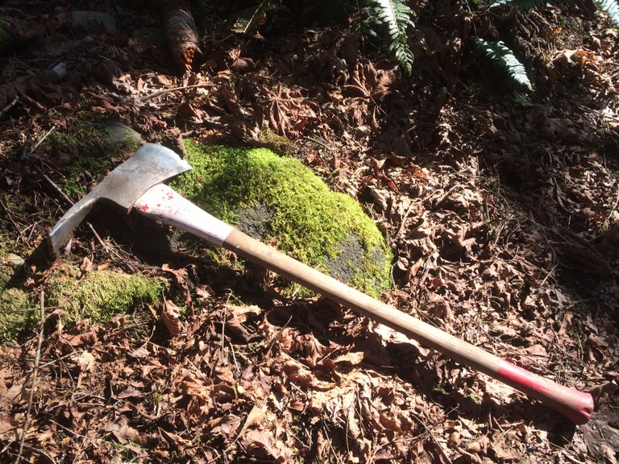
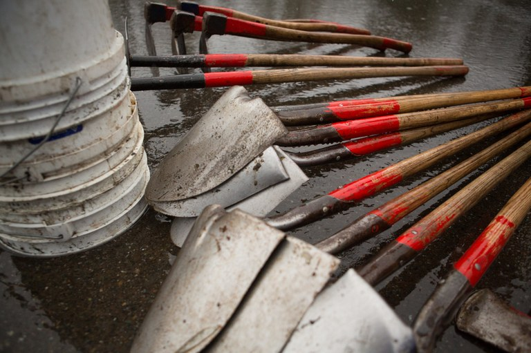
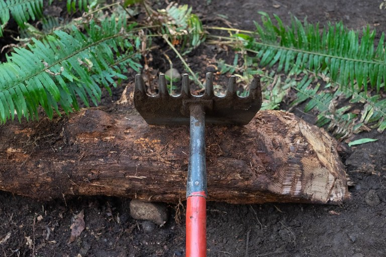
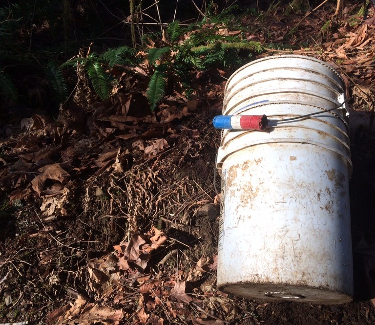

Standard Tools
-

Green Grubber
The green grubber bears resemblance to the grub hoe, albeit with a wider, sharper, and curved blade. It showcases exceptional proficiency in cutting through small roots and efficiently displacing loose material in a single motion. However, it lacks effectiveness as a prying instrument. If confronted with a task involving disentangling organic matter intermingled with roots and branches, the green grubber proves to be the optimal choice.
-

Grub Hoe
This tool is frequently employed for trail tread maintenance. It effectively loosens soil and removes organic debris with ease. While its blade lacks sharpness, making it unsuitable for cutting through thick roots, it manages to tackle smaller ones proficiently. While it can endure light prying, it's not as robust as alternative tools. Nonetheless, the grub hoe proves invaluable in trail construction endeavors.
-

Pulaski
This tool stands as an emblematic symbol in trail work. It bears the name of the pioneering forest ranger who conceived it and continues to be widely utilized by both wildland firefighters and trail workers to this day. Featuring an axe head on one end and an adze on the other, it enables rapid material clearance. The adze efficiently digs and scrapes at soil and rocks, while the axe swiftly chops through any obstructing roots.
-

Forst Service Shovel
The fire shovel utilized for trail work distinguishes itself from the standard garden shovel. Unlike its counterpart, it features a sharpened blade and an angled connection to the handle. This unique design minimizes the need for excessive bending by the user. Consequently, it facilitates efficient chopping through small roots and the swift scooping and tossing of dirt. However, caution must be exercised, as using this tool for prying purposes can result in handle breakage.
-

McLeod
The McLeod, named after its inventor, Malcolm McLeod, is a versatile tool widely used in trail work and firefighting. Its design consists of a wide hoe-like blade on one side and a rake-like surface on the other. This dual functionality allows users to efficiently clear vegetation, rake debris, and build fire lines. The McLeod's effectiveness and durability make it indispensable for outdoor tasks in rugged terrai
-

Corona Saw
The Corona saw is a reliable and widely used cutting tool in various outdoor applications, particularly in forestry, landscaping, and trail maintenance. Featuring a sharp and durable blade manufactured by Corona, a renowned brand in the industry, this saw excels at swiftly and cleanly cutting through branches, logs, and other woody vegetation. Its ergonomic handle design ensures comfortable and efficient use, making it a preferred choice among professionals and enthusiasts alike for tasks such as tree pruning, clearing trails, and general yard work.
-
Loppers
Loppers are indispensable tools for gardeners, landscapers, and arborists, designed for trimming and pruning small to medium-sized branches and foliage. With long handles and sharp, bypass or anvil-style cutting blades, loppers enable users to reach higher branches with ease and precision. Their ergonomic design reduces strain on the user's hands and arms, allowing for extended use without fatigue. Loppers are essential for maintaining the health and appearance of trees, shrubs, and bushes in gardens, parks, and landscapes.
Special tools
-

Double Jack
The sledgehammer proves invaluable in construction endeavors, serving to drive rebar into bridges and various structures, akin to a colossal hammer and oversized nail. A single jack represents a lighter variant, wielded with a single hand, while a double jack features a heavier head and an extended handle, necessitating the use of both hands.
-

Pick Mattock
This robust tool, equipped with a pick on one end and a mattock on the other, excels in handling challenging soil and prying tasks. Known for its durability, it ranks among the heaviest trail tools due to its sturdy construction. When faced with compacted rocky soil, this tool is the go-to option for swift and efficient completion of the task at hand.
-

Cross Cut Saw
This tool holds a storied reputation for its efficacy. Featuring a lengthy blade with handles on both ends, it necessitates synchronized operation by two individuals. Its utility shines when removing fallen trees from trails, particularly in locations where chainsaws are prohibited or unsuitable. However, the use of a crosscut saw is restricted to certified sawyers or individuals supervised by one.
-

Bucket
The humble 5-gallon bucket stands as a fundamental asset in trail maintenance. Its indispensable role becomes apparent when tasked with transporting substantial amounts of rock and soil. Buckets serve as reliable carriers for materials, facilitating their transfer between trail sections. Moreover, when fatigue sets in from the physical demands of the work, an empty bucket serves as a convenient makeshift seat. To mitigate the risk of injury and exhaustion, we adhere to a practice of only filling buckets halfway.
-

Rock Net
A common challenge encountered by trail work volunteers is the maneuvering of large objects into place. The Rock Sling presents an effective remedy for this issue. Given that massive rocks typically lack handles, the Rock Sling offers a solution by allowing a group of individuals to gather around, grasp the net, and lift collectively. Crafted from industrial-grade webbing, the Rock Sling boasts remarkable strength while remaining lightweight and compact in design.